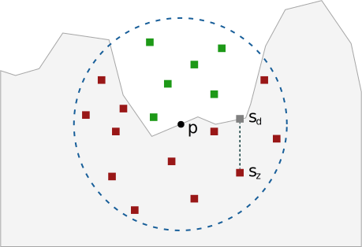

Source: http://frederikaalund.com
Source: http://frederikaalund.comIn a typical scene, indirect illumination is too computationally expensive to calculate in real time. While ray-tracing applications have the benefit of long rendering times to calculate the effect of multiple bounces of light, real time applications must find shortcuts to approximate these effects. Blinn-Phong shading attempts this by applying a constant illumination to all fragments in a scene, ensuring that no surfaces are left in complete darkness. However, the results of this appear quite unnatural, in the real world, surfaces that are surrounded by other objects tend to be darker. For example, if we viewed the corner of a room, Blinn-Phong ambient lighting would light both walls uniformly all the way to the corner. But in the real world, we can see that there should be a noticeable shadow around that corner. It seems that we could do much to improve this ambient lighting by somehow imitating this real world effect. SSAO is a method designed just for this purpose. At each fragment, SSAO performs tests to estimate what portion of its surroundings are obscured, or occluded, by other geometry. The more occluded a region is, the darker the ambient lighting at that sample should be. SSAO is widely used in real-time applications like video games, and has a subtle effect which can dramatically improve the realism of a scene.
Pathtracing unit-hemisphere AO with a radius of 0.7, 8 camera rays per pixel, and 128 samples per camera ray.
Here, we see the power of Ambient Occlusion (and also SSAO!).
We see some beautiful soft-shadows simulated by AO, as points on the ground under the sphere have more intersections than the rest of the points. The corners and edges are also darkened, as these have more intersections within a certain radius than other points in the scene.
Compared to the WebGL implementations below, pathtracing AO takes significantly longer (minutes, instead of hundredths of a second) as it's not as parallelized our WebGL implementation.
Perhaps this stark difference will be most obvious as we render scenes with significantly more geometry in real-time, below!
 Source: http://frederikaalund.com
The original implementation of SSAO was done in CryEngine 2. This implementation sampled from a unit sphere about each fragment to check what percentage of samples fell within other geometry.
Blank screen? Press the play button above to begin rendering. You can click and drag with your mouse; this is all in real time! Be sure to pause when you're done so you don't slow down other GPU-based operations like scrolling!
This scene has been rendered using WebGL through Three.js The camera can be moved by clicking and dragging. Scrolling will change the zoom level. This scene is prepared by rendering in two passes, the first of which calculates the depth buffer for the scene, and the second of which uses that information to compute the desired occlusion at each fragment.
Source: http://frederikaalund.com
Though the CryEngine 2 SSAO method was revolutionary for the time, it often resulted in every surface looking somewhat dull. This is because for most surfaces, consider a wall, for example, half of the sphere around that point will fall within its own geometry, resulting in occlusion for surfaces that were out in the open. Starcraft II improved on this method by implementing SSAO such that it used a normal-oriented unit hemisphere instead of a unit sphere, thus eliminating the samples which would be expected to fall within a surface's own geometry.
Starcraft II SSAO uses the same shaders as CryEngine 2 SSAO, however the results are noticeably different because the samples passed as uniforms to the shader are modified to fit the specification for this new implementation of SSAO.
Source: http://frederikaalund.com
While the first two SSAO methods sample points and check whether or not they are obscured in screen space, HBAO computes occlusion by estimating the horizon angle of a fragment. The horizon angle along a particular direction is the steepest angle within a certain range that encounters geometry. Consider the analogy of a horizon in the real world. The angle between the ground and the vector between your position and a nearby mountain range can be used to describe what percentage of the sky is unblocked, which in turn can inform how much light from the sky is able to reach your position.